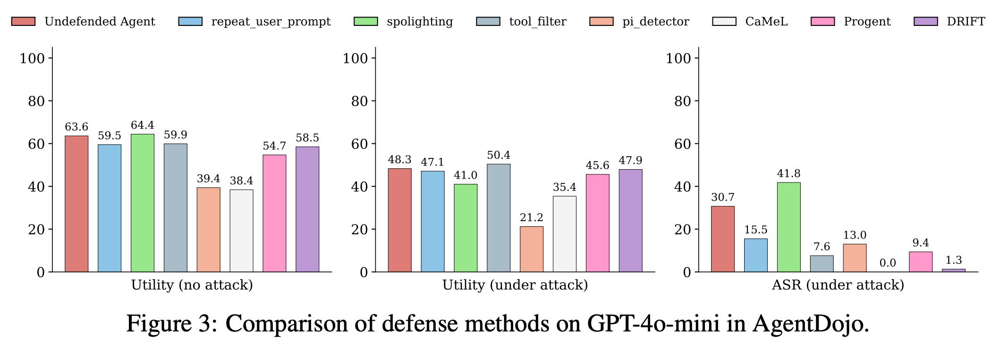
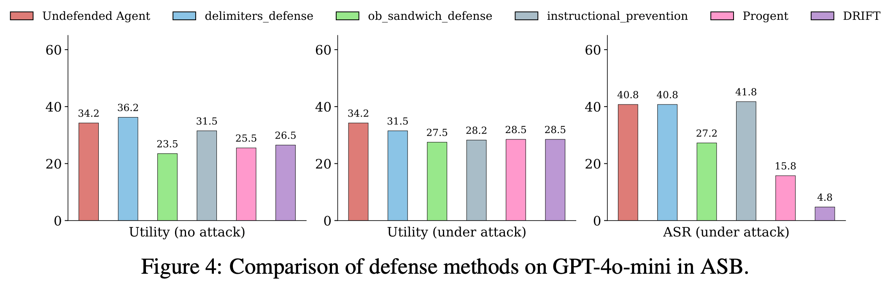
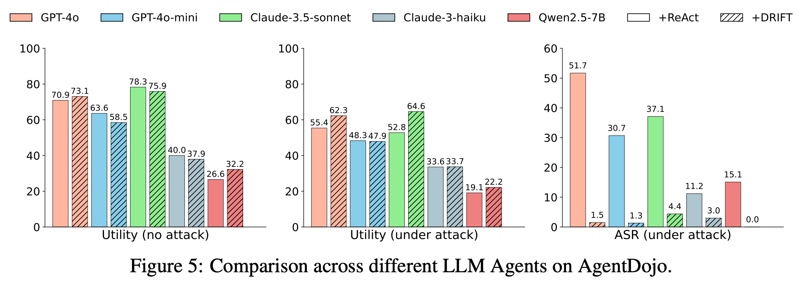
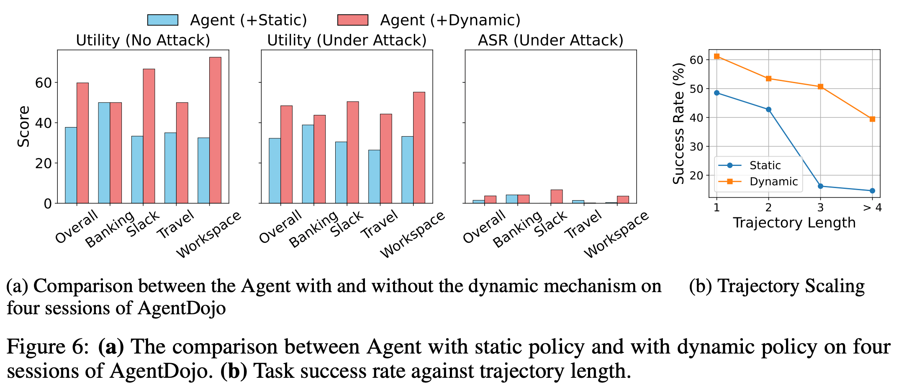

DRIFT: Dynamic Rule-Based Defense with Injection Isolation for Securing LLM Agents
1Washington University in St. Louis 2Johns Hopkins University 3Independent Researcher
Defense Comparison
Injection Detector
CaMeL
Progent
DRIFT (Ours)
Abstract
Large Language Models (LLMs) are increasingly central to agentic systems due to their strong reasoning and planning capabilities. By interacting with external environments through predefined tools, these agents can carry out complex user tasks. Nonetheless, this interaction also introduces the risk of prompt injection attacks, where malicious inputs from external sources can mislead the agent’s behavior, potentially resulting in economic loss, privacy leakage, or system compromise. System-level defenses have recently shown promise by enforcing static or predefined policies, but they still face two key challenges: the ability to dynamically update security rules and the need for memory stream isolation. To address these challenges, we propose DRIFT, a Dynamic Rule-based Isolation Framework for Trustworthy agentic systems, which enforces both control- and data-level constraints. A Secure Planner first constructs a minimal function trajectory and a JSON-schema-style parameter checklist for each function node based on the user query. A Dynamic Validator then monitors deviations from the original plan, assessing whether changes comply with privilege limitations and the user’s intent. Finally, an Injection Isolator detects and masks any instructions that may conflict with the user query from the memory stream to mitigate long-term risks. We empirically validate the effectiveness of DRIFT on the AgentDojo and ASB benchmarks, demonstrating its strong security performance while maintaining high utility across diverse models—showcasing both its robustness and adaptability.
Method
Figure 1. Overview of the Secure Planner, Dynamic Validator, and Injection Isolator.
DRIFT integrates a Secure Planner, a Dynamic Validator, and an Injection Isolator into a unified defense pipeline that enforces both control- and data-level constraints while keeping the agent memory stream free of injected content.
Secure Planner
Runs before any environment interaction. Decomposes the user query into a minimal function trajectory (control constraints) and a JSON-schema parameter checklist (data constraints), establishing clean security policies while the system is injection-free.
Dynamic Validator
Inspects each tool-call against the Planner’s constraints at runtime. Inspired by OS privilege concepts, functions are classified as Read / Write / Execute. Deviations are auto-approved for Read operations or assessed for intent alignment before a dynamic policy update.
Injection Isolator
After each tool response, scans for instructions that conflict with the original user query and masks them before storing in memory. Prevents long-horizon accumulation of injected content that could compromise future reasoning steps or other security modules.
Key Results
Stronger Functionality
Stronger Flexibility
Stronger Security
Lower Overhead
Experimental Figures

Figure 3. Defense comparison on AgentDojo (GPT-4o-mini). DRIFT achieves 1.3% ASR while outperforming CaMeL by 21.8% in utility.

Figure 4. Defense comparison on ASB. DRIFT reaches 4.8% ASR, the best among all evaluated defenses.

Figure 5. DRIFT adaptation across diverse LLMs. Security improvements are consistent—GPT-4o drops from 51.7% to 1.5% ASR.

Figure 6. Static vs. dynamic policy across four AgentDojo sessions. DRIFT’s dynamic policy wins in all scenarios.
Ablation Study
We ablate each DRIFT component on AgentDojo (GPT-4o-mini) to understand individual contributions.
Table 1. DRIFT achieves the best security (1.29% ASR) while maintaining near-baseline utility, demonstrating that each component plays a complementary role.
Full DRIFT Demo
Reference
@inproceedings{li2025drift,
title = {DRIFT: Dynamic Rule-Based Defense with Injection Isolation for Securing LLM Agents},
author = {Hao Li and Xiaogeng Liu and Hung-Chun Chiu and Dianqi Li and Ning Zhang and Chaowei Xiao},
booktitle = {Advances in Neural Information Processing Systems},
year = {2025},
url = {https://arxiv.org/abs/2506.12104}
}